Formula 1 (a.k.a. F1 or Formula One) is the highest class of single-seater auto racing sanctioned by the Fédération Internationale de l'Automobile (FIA) and owned by the Formula One Group. The FIA Formula One World Championship has been one of the premier forms of racing around the world since its inaugural season in 1950. The word "formula" in the name refers to the set of rules to which all participants' cars must conform. A Formula One season consists of a series of races, known as Grands Prix, which take place worldwide on purpose-built circuits and on public roads.
OVERVIEW
TEAMS
1. RedBull Racing
583 PTS
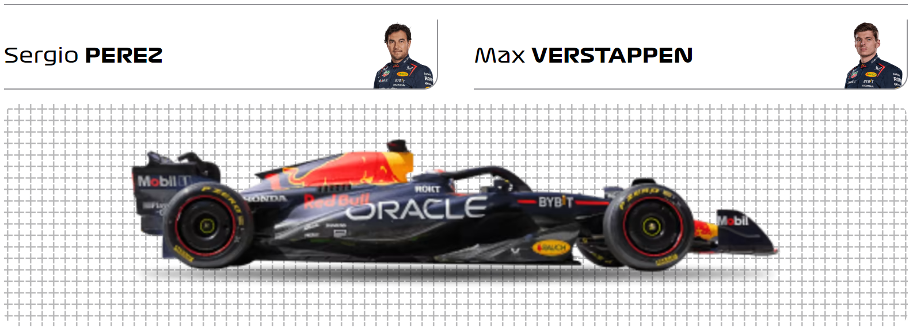Red Bull were no strangers to F1 - as sponsors - prior to formally entering as a works team in 2004. Nonetheless, the scale of their success over the following decade was staggering. After a first podium in 2006, the team hit their stride in 2009, claiming six victories and second in the constructors' standings. Over the next four seasons they were a tour de force, claiming consecutive title doubles between 2010 and 2013, with Sebastian Vettel emerging as the sport's youngest quadruple champion. Now they are recapturing that glory with an equally exciting talent – one named Max Verstappen…
2. Mercedes
273 PTS
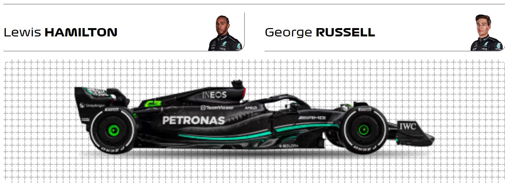Mercedes’ modern F1 revival started with the creation of a works squad for 2010 - the platform for a meteoric rise up the Grand Prix order. The team generated huge excitement from the off with the sensational return of Michael Schumacher, but headlines soon followed on track: three podiums in their debut season, all via Nico Rosberg - who then claimed a breakthrough pole/victory double at China in 2012. The following season he was paired with Lewis Hamilton, the duo going on to stage some epic title battles as the Silver Arrows swept all before them to become one of the most dominant forces of the modern F1 era. And with Hamilton now partnered by the up-and-coming George Russell, Mercedes remain very much the team that everyone wants to beat…
3. Ferrari
228 PTS
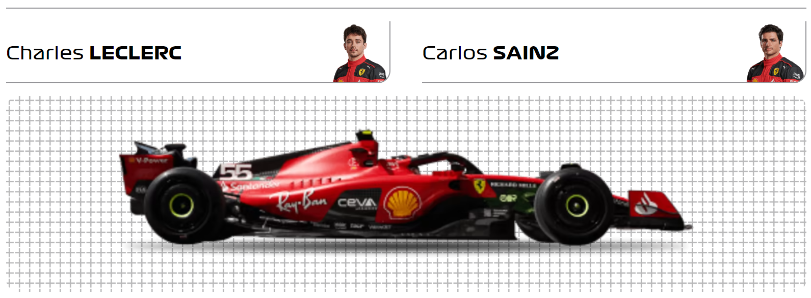For many, Ferrari and Formula 1 racing have become inseparable. The only team to have competed in every season since the world championship began, the Prancing Horse has grown from the humble dream of founder Enzo Ferrari to become one of the most iconic and recognised brands in the world. Success came quickly through the likes of Alberto Ascari and John Surtees, and continued – in amongst leaner times – with Niki Lauda in the 1970s and then Michael Schumacher in the 2000s, when Ferrari claimed a then unprecedented five consecutive title doubles, securing their status as the most successful and decorated team in F1 history...
4. Aston Martin
217 PTS
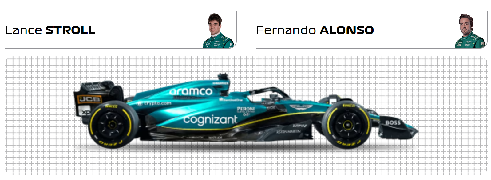Aston Martin’s original Formula 1 foray – over half a century ago – lasted just five races. This time, though, it’s serious. This F1 squad are no strangers to success, having won in their original guise of Jordan and most recently as Racing Point in 2020. Renowned for their ability to punch above their weight, and now with a two-time champion leading their driver line-up, Aston Martin are very much a team to watch…
5. McLaren
115 PTS
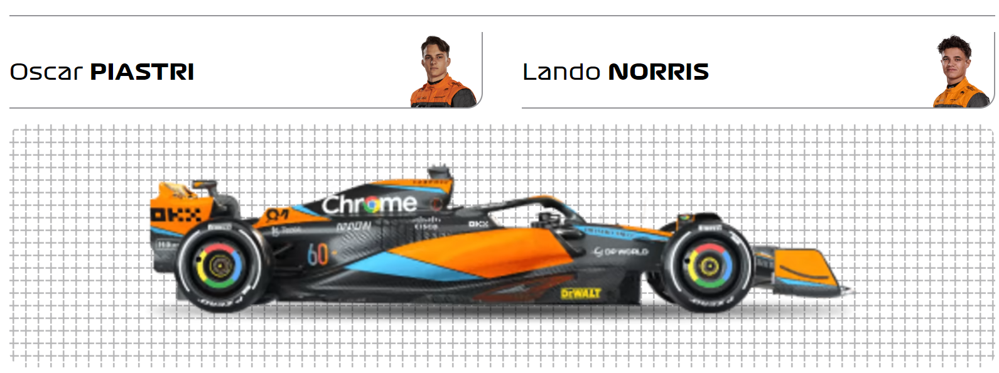Since entering the sport in 1966 under the guidance and restless endeavour of eponymous founder Bruce, McLaren's success has been nothing short of breathtaking. Five glittering decades have yielded countless victories, pole positions and podiums, not to mention eight constructors' championships. What's more, some of the sport's greatest drivers made their names with the team, including Emerson Fittipaldi, Ayrton Senna, Mika Hakkinen and Lewis Hamilton...
6. Alpine
73 PTS
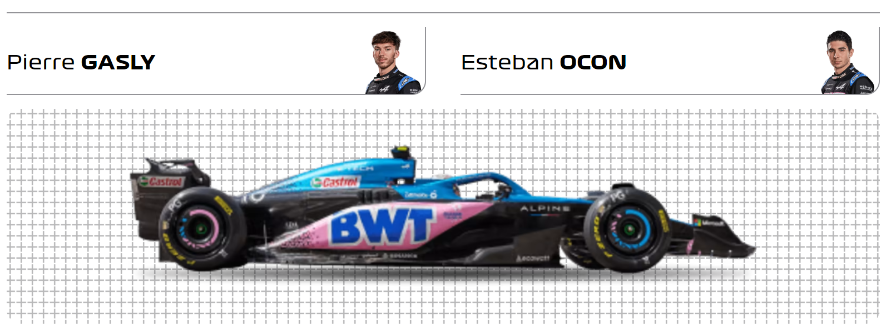Alpine may be a relatively new name to Formula 1, but Renault’s famous sportscar arm has plenty of motorsport heritage. The 2021 rebrand of the team marked the next step in Renault’s F1 revival, begun in 2016 with the takeover of the then-Lotus squad. Already race winners in their new guise, regular podiums and a tilt at the title must be their next target…
7. Williams
21 PTS
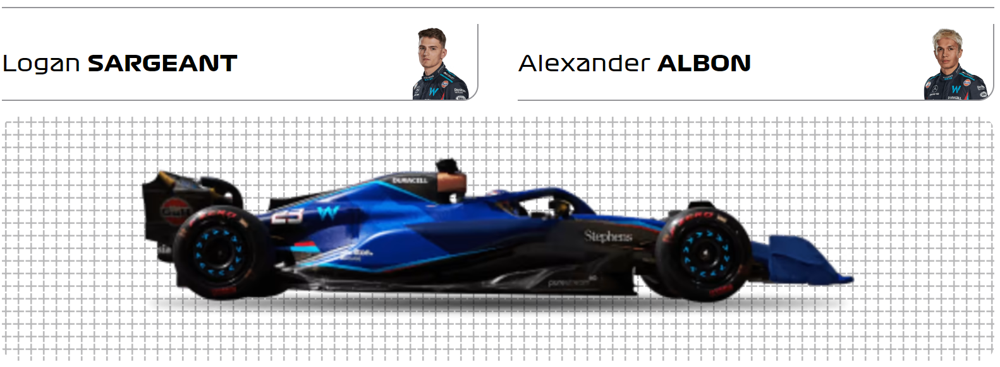Driven on by the brilliance and passion of the late Sir Frank Williams, Williams grew from humble beginnings to become a Formula 1 behemoth, unrivalled by all except Ferrari and McLaren in terms of enduring success. Over the past four decades the team has racked up Grand Prix wins and championship glory, and in the process nurtured some of the greatest talents in the sport, both in and out the cockpit. And, following the Williams family's decision to step aside after the 2020 sale of the team to Dorilton Capital, a new era has begun...
8. Haas
11 PTS
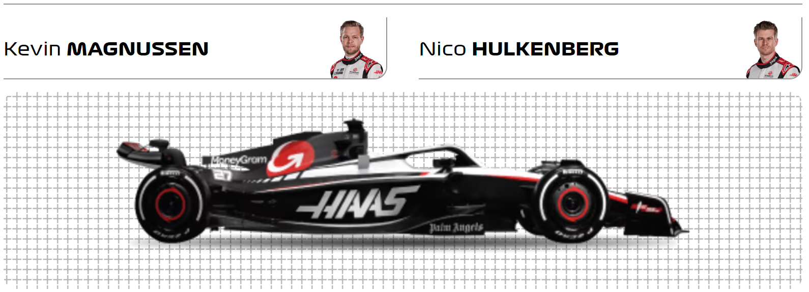The youngest team on the grid, Haas made their highly impressive debut in 2016, and in the process became the first all-American-led F1 squad in three decades. Founded by industrialist Gene Haas, they are based in the United States on the same Kannapolis, North Carolina facility as his championship-winning NASCAR Sprint Cup Series team, Stewart-Haas Racing. The Ferrari-powered team, led by the charismatic Guenther Steiner, also have a UK factory in Banbury…
9. Alfa Romeo
10 PTS

The name Alfa Romeo boasts Formula 1 connections dating back to the championship’s inception in 1950. Fast forward to the 21st century and Italian flare combines with Swiss sensibilities in a new era for the team formerly known as Sauber. Having enjoyed considerable success in world sportscars, where he helped nurture the emerging talents of future F1 stars Michael Schumacher and Heinz-Harald Frentzen, Peter Sauber guided his eponymous squad into F1 in 1993. The team has since established itself as a mainstay of the grid, becoming race winners under BMW’s brief ownership, and developing a well-earned reputation not only for producing competitive cars, but also for developing young drivers.
10. AlphaTauri
3 PTS
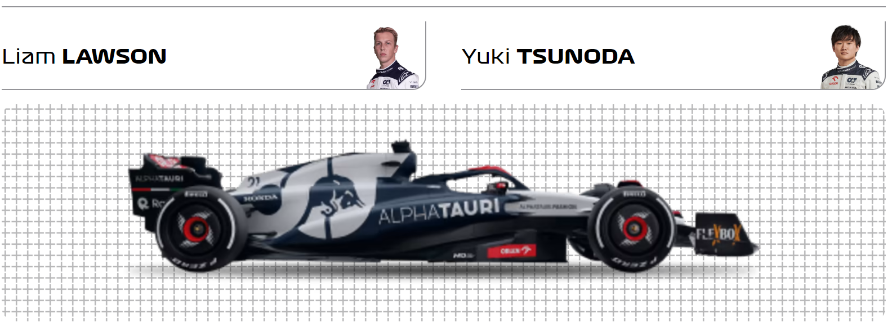Established in 2006 as a squad in which young drivers from Red Bull’s prodigious talent pool could cut their F1 teeth, AlphaTauri – originally named Toro Rosso – were formed from the ashes of the plucky Minardi team. Sebastian Vettel gave validity to the approach almost immediately, delivering a fairy-tale win in 2008, before going on to enjoy world championship success with parent team Red Bull Racing. Today the ethos of nurturing talent still holds true, though the Italian squad are no longer simply a ‘B team’ but a constructor in their own right...
2023 RACE RESULTS
| Grand Prix | Date | Winner | Car | Laps | Time |
|---|---|---|---|---|---|
| Bahrain | 05 Mar 2023 | Max Verstappen | RED BULL RACING HONDA RBPT | 57 | 1:33:56.736 |
| Saudi Arabia | 19 Mar 2023 | Sergio Perez | RED BULL RACING HONDA RBPT | 50 | 1:21:14.894 |
| Australia | 02 Apr 2023 | Max Verstappen | RED BULL RACING HONDA RBPT | 58 | 2:32:38.371 |
| Azerbaijan | 30 Apr 2023 | Sergio Perez | RED BULL RACING HONDA RBPT | 51 | 1:32:42.436 |
| Miami | 07 May 2023 | Max Verstappen | RED BULL RACING HONDA RBPT | 57 | 1:27:38.241 |
| Monaco | 28 May 2023 | Max Verstappen | RED BULL RACING HONDA RBPT | 78 | 1:48:51.980 |
| Spain | 04 Jun 2023 | Max Verstappen | RED BULL RACING HONDA RBPT | 66 | 1:27:57.940 |
| Canada | 18 Jun 2023 | Max Verstappen | RED BULL RACING HONDA RBPT | 70 | 1:33:58.348 |
| Austria | 02 Jul 2023 | Max Verstappen | RED BULL RACING HONDA RBPT | 71 | 1:25:33.607 |
| Great Britain | 09 Jul 2023 | Max Verstappen | RED BULL RACING HONDA RBPT | 52 | 1:25:16.938 |
| Hungary | 23 Jul 2023 | Max Verstappen | RED BULL RACING HONDA RBPT | 70 | 1:38:08.634 |
| Belgium | 30 Jul 2023 | Max Verstappen | RED BULL RACING HONDA RBPT | 44 | 1:22:30.450 |
| Netherlands | 27 Aug 2023 | Max Verstappen | RED BULL RACING HONDA RBPT | 72 | 2:24:04.411 |
| Italy | 03 Sep 2023 | Max Verstappen | RED BULL RACING HONDA RBPT | 51 | 1:13:41.143 |
DRIVERS
- Max Verstappen (RedBull)
- Sergio Perez (Redbull)
- Fernando Alonso (Aston Martin)
- Lewis Hamilton (Mercedes)
- Carlos Sainz (Ferrari)
- Charles Leclerc (Ferrari)
- George Russell (Mercedes)
- Lando Norris (McLaren)
- Lance Stroll (Aston Martin)
- Pierre Gasly (Alpine)
- Esteban Ocon (Alpine)
- Oscar Piastri (McLaren)
- Alexander Albon (Williams)
- Nico Hulkenberg (Haas)
- Valtteri Bottas (Alfa Romeo)
- Zhou Guanyu (Alfa Romeo)
- Yuki Tsunoda (AlphaTauri)
- Kevin Magnussen (Haas)
- Logan Sargeant (Williams)
- Daniel Ricciardo (AlphaTauri)
MEMORABILIA
The Best Battles Of 2023 So Far!
Top 10 Overtakes Of 2023... So Far!
NEWS
POINTS PERMUTATIONS:
WHERE AND WHEN VERSTAPPEN CAN BECOME THE 2023 F1 World CHAMPION?!
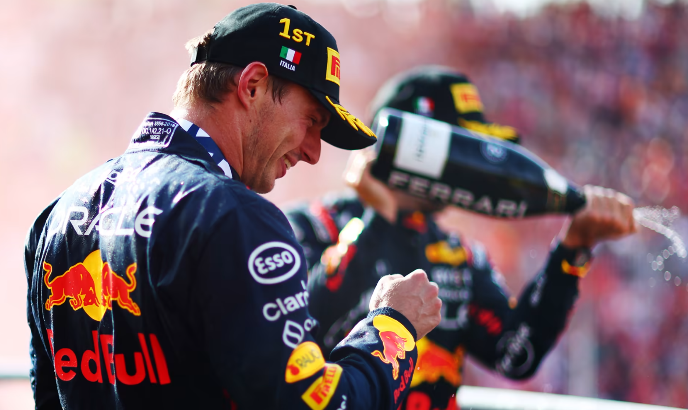check this out!
TECHNOLOGY
TECH TUESDAY: Red Bull’s ‘gold dust’ that could help them tackle the challenge of Singapore
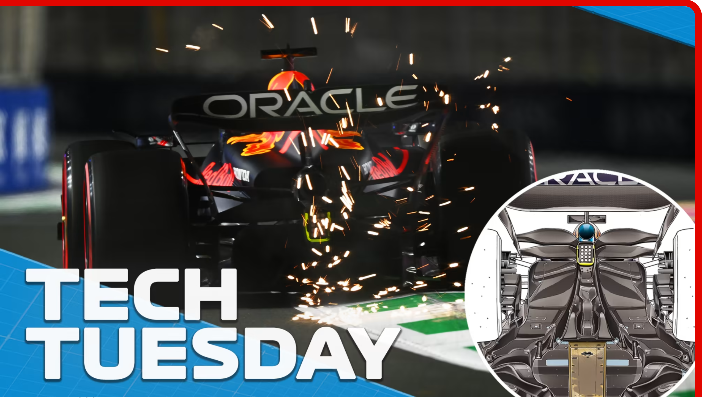check this out!
REFERENCE
- All the documentation in this page is taken from formula1.com